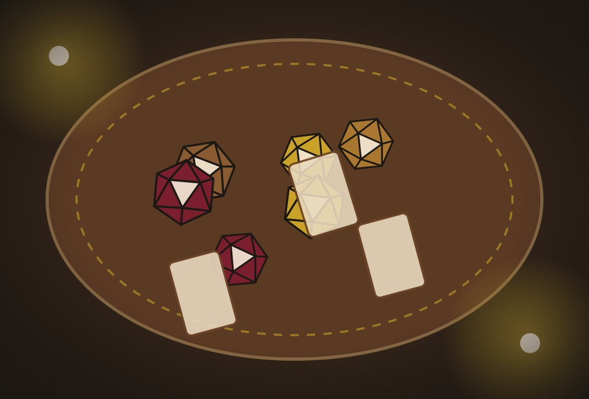

Passo 01
Crie sua sala
Escolha nome, sistema, limite de jogadores e se a sala será pública ou privada.

A Vinte Faces junta num só lugar o que o RPG de mesa online costuma espalhar por várias ferramentas. Veja como é jogar sem gambiarra.

Passo a passo
Tudo acontece no navegador, sem instalar nada.
Passo 01
Escolha nome, sistema, limite de jogadores e se a sala será pública ou privada.
Passo 02
Envie o link para seus jogadores ou deixe a sala aberta na lista de salas públicas.
Passo 03
Suba o mapa, posicione tokens e abra as fichas dos personagens.
Passo 04
Role dados, converse por voz e vídeo e, se quiser, inicie uma live para espectadores.
Para quem é
Não. A Vinte Faces funciona direto no navegador, sem downloads ou plugins.
Quem decide é o mestre: ele define o limite de jogadores ao criar a sala. Com a sala cheia, novas entradas são recusadas.
Salas públicas aparecem na lista e aceitam qualquer jogador; as privadas só entram por convite.
Sim. O mestre pode iniciar uma live da sala; os espectadores assistem e conversam no chat da plateia, sem aparecer na mesa.
Crie sua primeira sala em poucos cliques e chame a mesa para jogar.